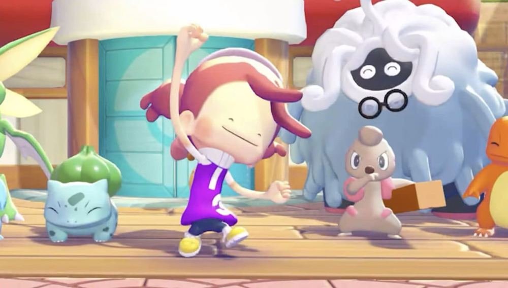
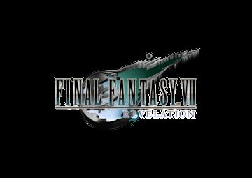
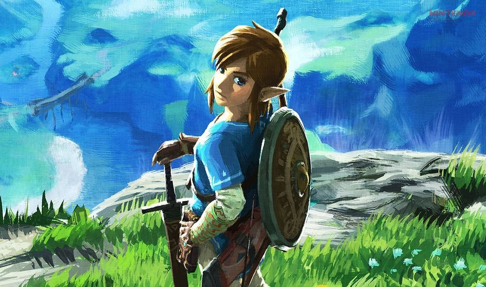
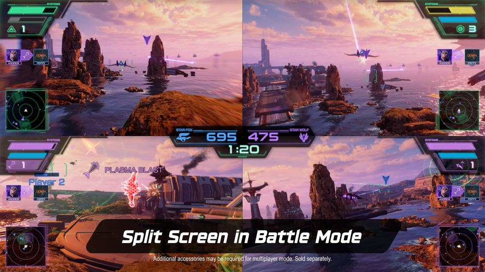
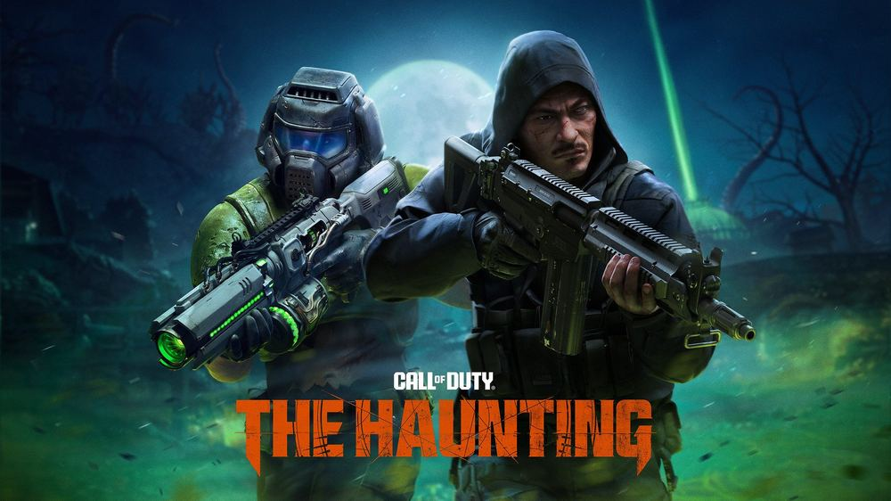
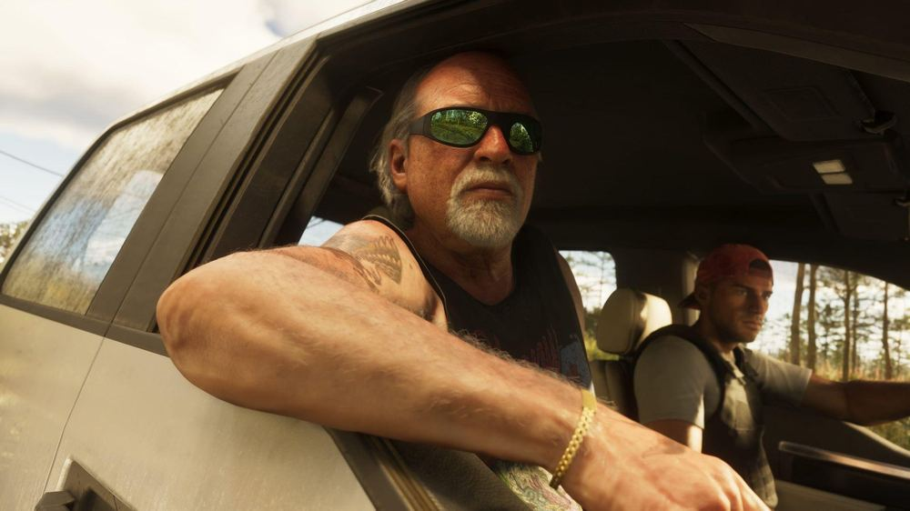
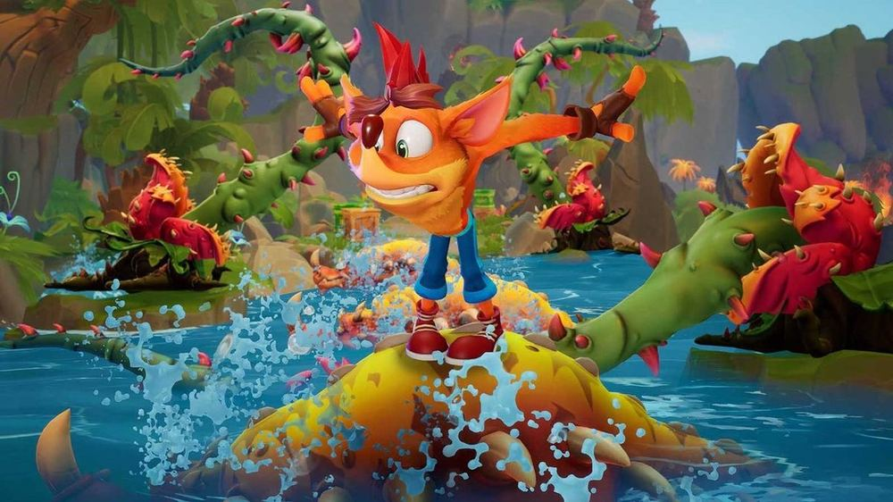
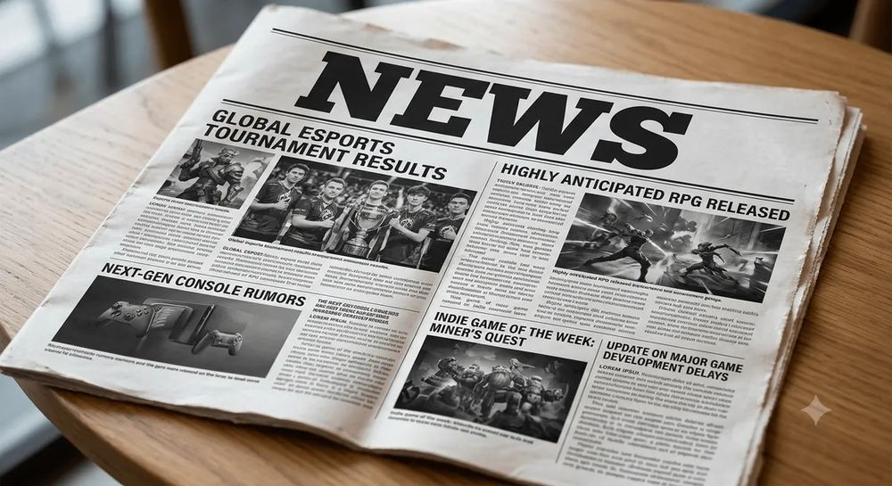

Nintendo-first, FF7-flagship, Xbox-nostalgic, handheld-obsessed. Built for one reader.
Update — Monday, Sep 14, 2026 · 8:00 AM ET run

Why you care: this is the game you said "saved my life." Nintendo also confirmed Part 2 of the Expansion Pass (Ditto in sunglasses and a bow tie, more furniture, more Pokémon) for later this year — Part 3's new town is still 2027.

Why you care: PAX West interview with Hamaguchi and battle director Teruki Endo. FITS = Warrior/Knight/Black Mage/Summoner-style specialized roles, swappable mid-fight. They wanted the Honeybee Inn/Wall Market outfits as skins but the combat animators vetoed it — heels and dresses don't play nice with the battle system. New non-FITS skins are coming instead. Doesn't resolve your linear-vs-open-world worry, but it's a real design detail, not marketing fluff.

Why you care: you specifically want 2D Zelda news, not another 3D open-world push. Leaker Nash Weedle (mixed track record — treat as a rumor, not a lock) says Nintendo + Grezzo are building on the Echoes of Wisdom engine, timed after the Switch 2 Ocarina of Time remake. A Sept 2 Nintendo patent grant covering Echoes' "summon an echo to fight for you" mechanic adds a little circumstantial weight but proves nothing about a sequel.

Why you care: this is your gift-from-her game, not just another Nintendo checkbox. Three new Battle stages (Katina, Sector X, Venom), local 4-player split-screen, and up to 4 players teaming up online from one console. Adventures quietly went live on Switch 2 GameCube Classics Sept 9 if you want the on-foot Rare game instead of dogfighting.

Why you care: real zombies-mode news, and it's a Doom crossover on top. "The Haunting" adds Tenshu survival map, Directed Mode for the final round-based map Rex Infernus, and a Super Easter Egg that unlocks The Warden as a playable operator once you clear all six main quests. No timeline on it competing with your MW4 window — this is Season 6, the last one before MW4 takes over in October.

Why you care: still a horizon event, not hype-of-the-day — but this is a genuinely rare break in Rockstar's silence. Root (Barry, Office Space, King of the Hill) confirmed it himself at a BAFTA press event, unprompted. Nov 19 date unchanged. Collector's-edition box leaks are still floating around Reddit but unverified — not worth chasing.

Why you care: "I love Crash Bandicoot tbh" — this is for you specifically. Activision's been drip-feeding anniversary art since Sept 2 and fans are reading tea leaves (Crash 5, a Crash Team Racing follow-up, a Netflix show, a Fortnite tie-in). Nothing official yet, and one leaker's claim of "new Crash in 2028" would mean a long wait — treating this as speculation, not a headline, on purpose.

Why you care: you're the handheld/display nerd of the group. Dual-screen clamshell built specifically for DS-era emulation, running Anbernic's own in-house NNDSS emulator on Linux (not Android), with a stylus that actually stores in the shell instead of rattling around. Price jumps to $94.99 after the launch window closes.